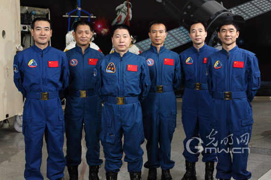

航天员
宇航员，或称航天员，全称宇宙航天员，则指以太空飞行为职业或进行过太空飞行的人。确定太空飞行的标准则没有完全统一。 在美国，以旅行高度超过海拔80公里(50英里)的人被称为宇航员(astronaut)。国际航空联合会(FAI)定义的宇宙飞行则需超过100公里。到2004年4月18日为止，按照美国的定义共计440人，在太空里度过了一共27,082个全体乘员天(crew-day，美国的定义)，在太空中散步共享了98个全体乘员天。在国际航空联合会的定义下，只有434人符合资格。进入太空的宇航员来自至少32个国家。在香港及东南亚，航天员亦称太空人。截至2013年，全世界仅有前苏联/俄罗斯、美国、中国三个国家拥有发射载人航天任务的能力。其他国家的宇航员都需要与以上三国合作来完成载人航天任务。自1961年人类首次飞天以来，共有来自38个国家的宇航员先后飞天。
1词语释义
约定俗成的，被俄罗斯航空及航天局雇佣的宇航员[1] 或前苏联的宇航员都被称为"космонавт"，其英文版本为Cosmonaut。"космонавт"来自希腊语单词"kosmos"(代表"全宇宙")和"nautes"(代表"船员")。事实上，"cosmonaut"和"astronaut"意义相同，选择所使用词语的原则常常是政治因素。1995年3月14日，宇航员诺曼·萨伽德成为首位乘坐俄罗斯发射的航天器上太空的美国人，可以认为在此过程中，他成为首位美国"cosmonaut"。
据称，马来西亚的赵里昱(Chiew Lee Yih)在1998年3月创造了"Taikonaut"(太空人)一英文词，并首先在某个网络科技论坛里使用。差不多同时，陈蓝(Chen Lan，音)在其"Go Taikonaut"的网页里使用它。这个词普遍被西方媒体用来称呼中国的太空人。"Taikonaut"由"太空"的汉语拼音"taikōng"和"船员"的英文缩写"naut"(或"航行者"的希腊文"naus"，"宇航员"的英文"Astronaut"删节组成。但在中国官方所发布的稿件中，多半坚持使用更带技术性的名词"航天员"(astronaut)，意思为"太空航行者"。
2太空里程碑
世界上第一名宇航员是苏联的尤里·加加林，他在1961年4月乘坐东方1号(Vostok 1)进入太空。第一位女性宇航员是瓦伦蒂娜·特雷斯科娃，她在1963年6月乘坐东方6号(Vostok 6)进入太空。在1961年5月上太空的艾伦·谢泼德则成为美国首位宇航员。2003年10月15日，杨利伟乘坐神舟五号成为中国首名宇航员。其他曾经进入过太空的华裔人士包括卢杰、王赣骏、焦立中、张福林，所有人都来自美国。
上太空的宇航员里面最年轻的是戈尔曼·季托夫，当他乘坐东方2号上太空时只有26岁。最老的则是约翰·格伦，他乘坐STS-95上太空时已经77岁了。在太空中逗留最长纪录是瓦里李·保利耶可夫的438天。到2003年，个人上太空的最多次数是七次，纪录由杰里·L·罗斯和富兰克林·张-迪亚斯两人所保持。宇航员离地球最远的距离是401,056公里(在阿波罗13号紧急事件时产生)。
首个自制太空船上太空的宇航员是迈克·梅尔维尔，乘坐的是太空船一号(SpaceShipOne Flight 15P)。这应该与各式各样百万富翁太空游客形成对比，那些太空游客只是作为公开提供资金的飞行乘客或少数人员(通常由俄罗斯提供飞到电离层(ISS)的服务)。
在美国，被选为宇航员候选人将收到银质宇航员之翅。当他们进入太空后，他们将收到金质宇航员之翅。美国空军也对飞越海拔80公里的飞行员授予宇航员之翅。
3训练
挑选
航天活动是一种特殊的职业活动，它具有工作环境特殊、职业技能高度复杂、飞行任务艰巨等特点。这样的职业，要求航天员不仅具备健康的体格、良好的心里素质，而且对航天环境要有高度的耐受和抗压能力，同时还应具备渊博的知识、高超的技能等。因此，世界各航天部门对航天员都进行了精心的选拔。
航天员选拔的具体内容根据航天器的装备、航天任务等确定，一般分为4个方面。
1、基本条件
与飞行员选拔相同，但文化程度和工作能力要求更高。
2、医学选拔
除沿用飞行员的医学选拔条件外，还在既往史上注意有无隐性神经-内分泌系统的功能紊乱。在体检中须全面而细致地检查心血管系统、前庭功能和视觉系统等。
3、心理选拔
心里素质选拔是航天员选拔的重要方面，要查明受检者的性格、情绪稳定性、精神状态、与人共事的适应性和协调性等。
4、航天特殊环境耐力选拔
在载人航天初期，人们十分重视特殊环境耐力选拔，但随着航天技术的不断发展和载人航天器内环境的逐步改善，一些特殊环境因素测试，如噪声、振动、温度已经不再作为选拔的主要内容。特殊环境耐力选拔主要进行的是失重适应能力和返回后再适应能力的测试，如前庭功能检查、超重耐力检查、低压缺氧耐力检查等。
经过这些项目检查后，医务人员对检查的结果进行单项和综合项目的评定，作出总的评价。
目的
基础训练的目的，首先是使宇航员候选人掌握并完成载人航天所必须的科学知识和技巧，其次是要进一步提高其体能和改善其心理品质。宇航员所必须接受的体能和心理训练:例如置身重力达10倍地球重力的离心机和长期处于绝音室的训练，其艰苦程度实在令人难以想象。 首先，要有本科学习经历，需要接受科学、医药、工程学等领域的知识;其次，必须具备操作经验，尤其是担任试飞员的经验;第三，优秀的宇航员还善于帮助别人。"
隔离室训练
飞船进入宇宙空间后，远离一大堆人群，除和地面联系外，与世隔绝，长期的寂寞生活对人的心理、生理都有一定的影响。为了让宇航员能够适应这种特殊的生活，隔离室训练便应运而生。隔离室几乎不受任何声响刺激，如同与外界隔绝一样。性格是否合得来是不是选定机组人员时要考虑的因素?宇航心理学家说,不是,许多人听到都会感到吃惊，因为毕竟宇航员要在一个狭小的空间里一起生活工作，同一个你受不了的人共处可不是什么开心的事，弄不好连工作都要受到影响。但是，宇航员都是职业素养很高的人，他们不会让个人的心情影响到任务的执行。再说，一次航天时间都相对比较短,一般是一个星期，最多也不过两个星期。对大多数宇航员来说，在这样短暂的期间里，哪怕是与魔鬼同眠都不是问题。但是，如果是去空间站或去火星，一去就是几个月甚至几年，那可就完全是另一回事了。性格合不来的人长期相处难免产生矛盾冲突，会影响到大家的合作关系。所以,对宇航员心理素质的要求就非常重要。
揭秘
中国训练揭秘
距离今秋十月载人飞船升空的日子已经不多了，宇航员们现阶段在训练什么呢?陈辉教授透露说，当前仍然有宇航员的基础训练，熟悉飞船舱内设施也是他们的主要训练内容。去年年底，陈辉教授曾经进入航天城参观，他向记者讲述了宇航员花样繁多的训练内容。
入选条件
想成为宇航员，入选条件除飞行时间超过1000小时、基本身体素质良好外，还必须通过航天城特有设施的"技术考验"，包括:每分钟转速24圈的转椅，以检查其对震动及眩晕的耐受能力;前后甩动幅度15米的电动秋千，以测试飞船进入轨道时可能使人体产生的空间运动病等。
极度眩晕
"转椅+秋千"
进入航天城，首先进入眼帘的是一间不大的房子，四面封闭，除了靠墙一台控制仪外，地中央的一张转椅格外引人注目。这张转椅不但可以做180度顺时针和逆时针的快速运转，而且可以同时上下前后摆动。转椅主要是用于检查宇航候选者的前庭神经功能，以了解他对震动及眩晕的耐受能力。
从转椅室出来进入的是电动秋千室，在高达数十米钢架的护卫下，一台貌似汽车的厢式秋千被四条钢臂凌空提起。电动秋千荡起时，前后能甩出15米，它主要是用于适应空间运动和开展对空间运动病的研究。
体验"蹦极"
航天城里还有一个"冲击塔室"，内有一座约4层楼高的绿色铁塔。它的作用是模拟飞船返回地球的冲击环境，从而加强人的抗冲击耐力，研究各种方式的防护措施。
比玩"飞碟"难受多了3层楼高的离心机室里装备着亚洲规模最大的国产载人离心机。
人体离心机是一种巨大的旋转装置，既可以上下伸缩，也可以左右转动。顶上有一条长达16米的旋转手臂，它用结实的钢架紧紧托住了位于手臂前方的一只椭圆形不锈钢封闭吊舱，这只吊舱也可以呈一定的角度转动，因此可以建立同方向作用于宇航员的超重条件。当整个离心机开起来时，有些像游乐场中的"飞碟"，无论是"房子"、"手臂"还是吊舱，都在不停地加剧转动摇摆，但其转动的速度和摇摆角度则是"飞碟"无论如何都无法比拟的。
忍受狭小和孤寂
宇航员的安全和健康的研究是空间技术发展的一个重点，宇航员训练中心里有各种各样为使宇航员适应太空生活而设置的模拟舱。
低压舱是一座淡绿色的T形舱，内有工作舱、休息舱和卫生舱3部分。当宇航员穿上特制的航天服走进低压舱之后，舱内的空气就被抽掉，宇航员此时就开始进入"太空"。狭小的舱内既没有电视也没有音响，就连做一些摇摆幅度较大的健身活动也很受限制，没有电话，不准通信，与社会完全隔绝。学会如何适应这种环境，是走进太空之前必须攻克的课题。
认识回家的路
天象仪室是宇航员模拟训练中的最后一个关卡，宇航员升空执行任务之前必须在这里熟悉星空图，找出自己将要走过的路线，一旦载人飞船的自动导航系统出现故障，宇航员就可以自己操控。